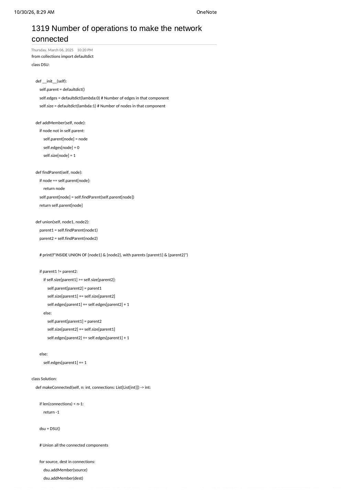
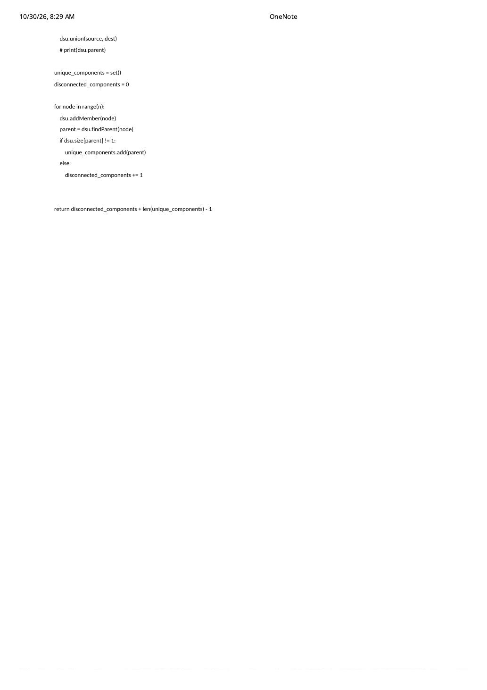

LC 1319: Number of Operations to Make Network Connected — Cable Invariant, Edge Tracking & Singleton Counting
Expanded from competitive coding study note: 11_1319_Number_of_operations_to_make_the_network_connected.pdf (Pages 1–2, dated March 6, 2025) · View original note pages
1. Problem Statement
There are $n$ computers numbered from $0$ to $n - 1$ ($1 \le n \le 10^5$) connected by ethernet cables connections where $\text{connections}[i] = [a_i, b_i]$ represents an undirected cable between $a_i$ and $b_i$ (no duplicate cables or self-loops). In one operation, you may extract any cable between two directly connected computers and place it between any pair of disconnected computers. Return the minimum number of operations needed to make all $n$ computers connected, or -1 if it is impossible.
2. Mathematical Invariant: Why $|E| \ge n - 1$ Guarantees Enough Spare Cables
At first glance, it feels like you must explicitly count how many redundant cycle cables exist inside each component (which is why Page 1 of the note tracks self.edges[parent]!). Let's prove a crisp graph-theory identity showing why checking $|E| \ge n - 1$ upfront suffices—and when tracking self.edges[parent] becomes indispensable in harder problems:
Spanning-Forest Spare Cable Proof
- Minimum cables to connect $n$ nodes: Any connected graph on $n$ vertices contains a spanning tree of $n - 1$ edges. Thus if $|\text{connections}| \lt n - 1$, connecting the network is strictly impossible $\implies$ return
-1. - Minimum operations to link $C$ components: Suppose the existing cables partition the $n$ computers into $C$ connected components (including isolated degree-$0$ computers!). Each rewired cable reduces the component count by at most $1$, so we need at least $C - 1$ operations.
- Exact spare-cable budget: Component $k$ ($1 \le k \le C$) with $V_k$ vertices and $E_k$ internal edges needs only $V_k - 1$ spanning-tree edges to stay internally connected, leaving $E_k - (V_k - 1)$ spare cycle cables that can be unplugged safely. Summing across all $C$ components:
$$\text{Total Spare Cables} = \sum_{k=1}^{C} \big(E_k - (V_k - 1)\big) = |E| - \sum_{k=1}^{C} V_k + C = |E| - n + C$$Whenever $|E| \ge n - 1$, we automatically have:$$\text{Total Spare Cables} \ge (n - 1) - n + C = C - 1$$Hence the minimum operations is always exactly $C - 1$!
{0,1,2,3} uses 3 green cables as a spanning tree and donates its 2 red cycle chords to connect isolated computers 4 and 5.3. Unpacking Two Great Patterns Inside 11_1319
Inspecting Pages 1–2 of 11_1319 reveals two patterns worth understanding deeply:
- Per-component edge counting (
self.edges[parent]):- When
parent1 != parent2(two components merge):self.edges[parent1] += self.edges[parent2] + 1(adds both subcomponent edge totals plus the newly added bridge edge). - When
parent1 == parent2(cycle chord inside one component):self.edges[parent1] += 1! - While our proof above shows LC 1319 doesn't actually need
self.edgesonce $|E| \ge n - 1$ is checked, keep this exactedges[root]pattern in your toolkit—it solves LC 2685: Count the Number of Complete Components (checking $\text{edges}[r] == \binom{\text{size}[r]}{2}$) in one pass!
- When
- Why Page 2 Splits
unique_componentsvs.disconnected_components—and How to Simplify It to 1 Integer:- Because the note lazily registered nodes via
addMemberonly when iteratingconnections, degree-$0$ computers (like4and5above) weren't indsu.parentuntil Page 2'sfor node in range(n)loop. There, multi-node components (size != 1) were deduplicated into a setunique_components, while degree-$0$ singletons (size == 1) incrementeddisconnected_components. - Cleaner eager alternative: Pre-initialize all $n$ nodes ($0 \dots n - 1$) with
components = nupfront, and simply decrement--componentsinsideunionwheneverp1 != p2! Thenreturn components - 1finishes in $\mathcal{O}(1)$ with no post-loop or hash maps at all!
- Because the note lazily registered nodes via
4. DFS/BFS $\to$ Lazy Dict DSU $\to$ Eager Array DSU
| Approach | Time | Space | Notes |
|---|---|---|---|
| Adjacency List + DFS/BFS | $\mathcal{O}(n + m)$ | $\mathcal{O}(n + m)$ | Must allocate $\mathcal{O}(n + m)$ adjacency vectors for all cables. |
Lazy defaultdict DSU (11_1319) |
$\mathcal{O}(n + m \cdot \alpha(n))$ | $\mathcal{O}(n)$ | Tracks size & edges per component; higher Python dict overhead. |
Eager Array DSU + Live --components |
$\mathcal{O}(n + m \cdot \alpha(n))$ | $\mathcal{O}(n)$ | Zero adjacency list, zero hash sets, $2n$ contiguous ints, returns components - 1 directly! |
5. Clean C++ & Python Implementations
First is the ultra-clean eager C++ implementation, followed by both the streamlined Python solution and the per-component edges tracker from the note:
#include <bits/stdc++.h>
using namespace std;
class Solution {
public:
int makeConnected(int n, vector<vector<int>>& connections) {
if (static_cast<int>(connections.size()) < n - 1) {
return -1; // Fewer than n - 1 cables cannot span n computers
}
vector<int> parent(n), sz(n, 1);
iota(parent.begin(), parent.end(), 0);
int components = n;
auto findPar = [&](auto& self, int x) -> int {
return parent[x] == x ? x : parent[x] = self(self, parent[x]);
};
for (const auto& c : connections) {
int p1 = findPar(findPar, c[0]);
int p2 = findPar(findPar, c[1]);
if (p1 != p2) {
if (sz[p1] < sz[p2]) swap(p1, p2);
parent[p2] = p1;
sz[p1] += sz[p2];
--components; // Two components merged into one!
}
}
return components - 1;
}
};# Python DSU with size + edge count tracking (faithful to 11_1319, array-backed)
class DSU:
def __init__(self, n: int):
self.parent = list(range(n))
self.size = [1] * n
self.edges = [0] * n
self.components = n
def find_parent(self, node: int) -> int:
if node != self.parent[node]:
self.parent[node] = self.find_parent(self.parent[node])
return self.parent[node]
def union(self, u: int, v: int) -> None:
p1, p2 = self.find_parent(u), self.find_parent(v)
if p1 != p2:
if self.size[p1] < self.size[p2]:
p1, p2 = p2, p1
self.parent[p2] = p1
self.size[p1] += self.size[p2]
self.edges[p1] += self.edges[p2] + 1
self.components -= 1
else:
self.edges[p1] += 1 # Redundant cable inside existing component
class Solution:
def makeConnected(self, n: int, connections: list[list[int]]) -> int:
if len(connections) < n - 1:
return -1
dsu = DSU(n)
for source, dest in connections:
dsu.union(source, dest)
return dsu.components - 16. Complexity Proof & Key Edge Cases
- Time Complexity — $\mathcal{O}(n + m \cdot \alpha(n))$: Initializing $n$ elements takes $\mathcal{O}(n)$ and processing $m = |\text{connections}|$ cables takes $\mathcal{O}(m \cdot \alpha(n))$. (Notice that if $m \lt n - 1$, the early guard returns
-1in $\mathcal{O}(1)$ before even allocating DSU!) - Space Complexity — $\mathcal{O}(n)$: Flat arrays of size $n$, independent of $m$ (which can be up to $\binom{n}{2}$).
- Key Edge Cases:
n = 1, connections = []: $|E| = 0 \ge 1 - 1 = 0$,components = 1$\implies$ returns0operations.- Already connected network ($C = 1$): Returns $1 - 1 = 0$ operations even if extra cycle cables are present.
- Degree-0 isolated computers: Automatically counted in
components = nfrom the start!
From the Handwritten Notes
View original note page 1 — 11_1319_Number_of_operations_to_make_the_network_connected.pdf (DSU with size & edges tracking + n−1 guard)


11_1319 Page 1 (March 6, 2025): Python DSU maintaining per-component size and edges, plus the len(connections) < n - 1 impossibility check.View original note page 2 — 11_1319_Number_of_operations_to_make_the_network_connected.pdf (Multi-node vs. singleton component sum)


11_1319 Page 2: Summing disconnected_components (size $1$) and len(unique_components) (size $\gt 1$) to return $C - 1$.